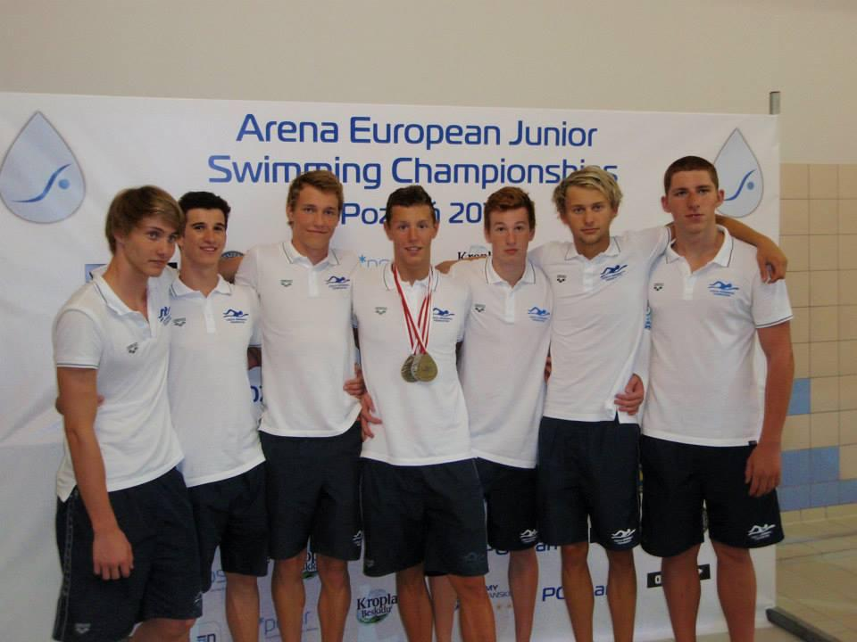

Pravděpodobně nejúspěšnější plavec v historii KIN. Závodník na dlouhé kraulové tratě, který na letním MČR dospělých vybojoval celkem 4 medaile – největší úspěch přišel na 1500 m volným způsobem, kde se stal vicemistrem ČR. Medaile bral i na zimním MČR (25m bazén), opět na 1500 m. Mezi lety 2013 a 2014 reprezentoval Českou republiku na třech evropských šampionátech (MEJ 50m, ME 25m, ME 50m).
| 1500 m volný způsob | 15:08,02rekord JČ kraj | |
| 800 m volný způsob | 7:54,97rekord JČ kraj | |
| 400 m volný způsob | 3:50,77rekord JČ kraj | |
| 400 m polohový závod | 4:21,41rekord JČ kraj | |
| 200 m volný způsob | 1:50,57rekord KIN | |
| 200 m motýlek | 2:02,19rekord KIN | |
| 200 m polohový závod | 2:05,76rekord KIN | |
| 100 m polohový závod | 0:58,48rekord KIN | |
| 100 m motýlek | 0:56,80rekord KIN | |
| 100 m volný způsob | 0:52,70rekord KIN | |
| 50 m motýlek | 0:25,92rekord KIN | |
| 100 m znak | 0:58,26rekord KIN | |
| 50 m volný způsob | 0:24,71rekord KIN | |
| 50 m znak | 0:27,15rekord KIN |
| 400 m volný způsob | 3:58,63rekord JČ kraj | |
| 800 m volný způsob | 8:13,98rekord JČ kraj | |
| 1500 m volný způsob | 15:51,99rekord KIN | |
| 200 m motýlek | 2:05,34rekord KIN | |
| 200 m volný způsob | 1:55,54rekord KIN | |
| 400 m polohový závod | 4:37,26 | |
| 200 m polohový závod | 2:13,00 | |
| 100 m motýlek | 0:59,46rekord KIN | |
| 100 m volný způsob | 0:56,04 | |
| 200 m znak | 2:19,81 | |
| 50 m motýlek | 0:27,35rekord KIN |